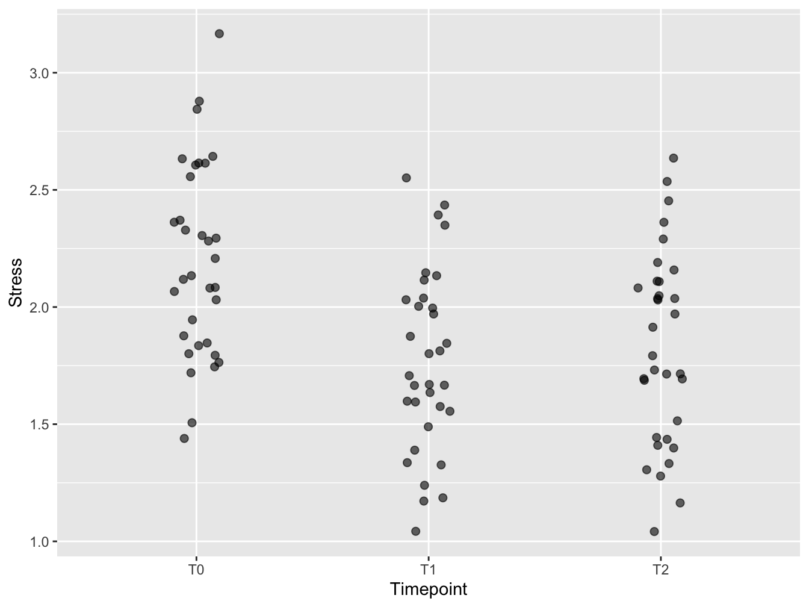
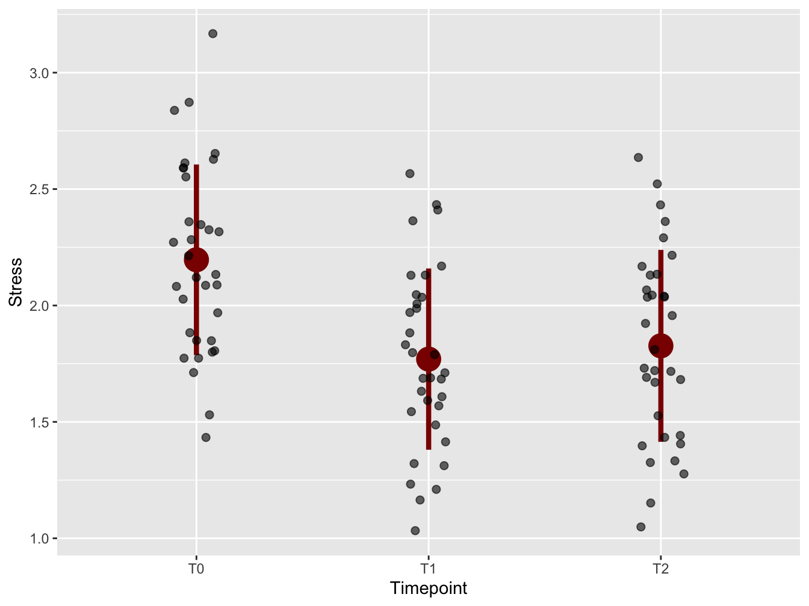
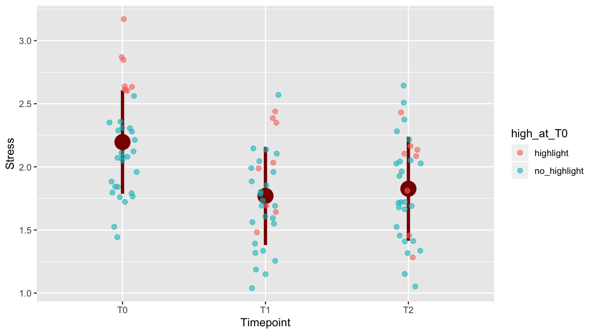
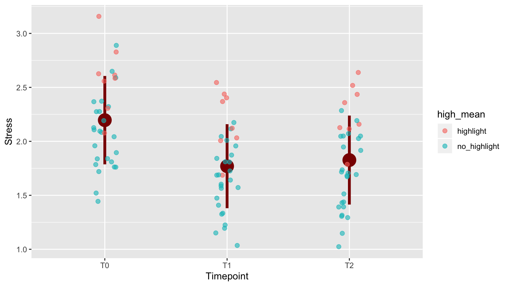
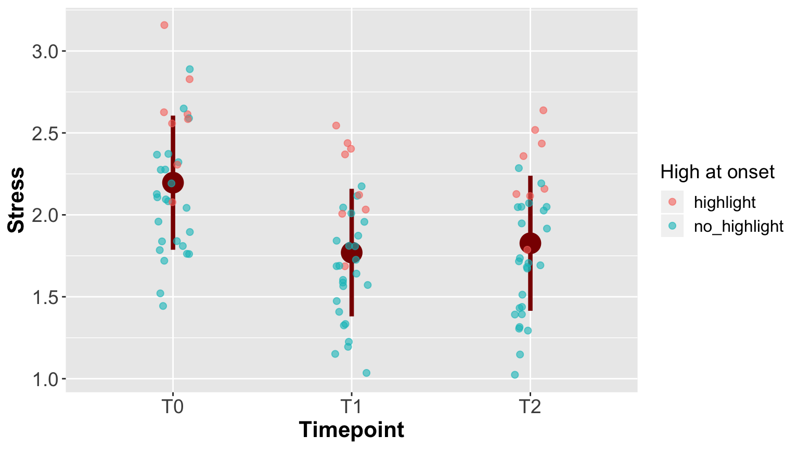

Chapter 2 A real case: an experimental PTSS treatment
2.1 Developing a custom visualization
This post shows data that was collected in a research effort investigating the effect of some treatment of subjects with PTSS. Here, I show only one variable that was collected, a stress score.
Since the group size was very low, and there was no control group, statistical analysis was not really feasible.
But the question was: is there an indication of positive effect and a reason to continue the investigations? An attempt was made by developing a visualization to answer this question.
The data
The collected data was a distress score collected at three time points: 0 months (null measure, T0), 3 months (T1) and 12 months (T2) through questionnaires.
## Clientcode T0 T1 T2
## 1 1 2.60 2.44 2.16
## 2 2 1.84 1.72 1.52
## 3 3 2.04 2.12 1.32
## 4 4 2.60 1.48 2.08
## 5 5 2.08 1.04 2.04
## 6 6 2.20 1.84 2.04You can see this is a really small dataset.
What to visualize
Before starting the visualization, several aspects should be considered:
- The audience:
- people do not want to read lots of numbers in a table
- in this case no knowledge of statistics (and this is usually the case)
- people do not want to read lots of numbers in a table
- The data:
- here, small sample size is an issue
- this dataset has connected measurements (timeseries-like)
A Jitterplot
I chose a jitterplot because:
- it is well suited for small samples
- it does not have the complexity of a box plot
2.2 Tidy the data
Create a tidy (“long”) version of the data
distress_data_tidy <- gather(distress_data,
key=Timepoint,
value=Stress, "T0", "T1", "T2")
distress_data_tidy$Timepoint <- factor(distress_data_tidy$Timepoint, ordered = T)
head(distress_data_tidy)## Clientcode Timepoint Stress
## 1 1 T0 2.60
## 2 2 T0 1.84
## 3 3 T0 2.04
## 4 4 T0 2.60
## 5 5 T0 2.08
## 6 6 T0 2.202.3 First version
Big plot symbols (powerpoint size), a bit of transparencey. Little horizontal jitter, no vertical jitter: already measured in continuous scale.
 Code will be shown in final slide.
2.4 Add mean and IQR
To emphasise the trend in the timeseries, means and standard deviations from the mean were added (“below” the plot symbols!) using stat_summary()

2.5 Emphasise worst cases
To emphasise the development of subjects who were in the worst shape at the onset of the research(T0), the top 25% at T0 were highlighted.
## Clientcode T0 T1 T2 high_at_T0
## 1 1 2.60 2.44 2.16 highlight
## 2 2 1.84 1.72 1.52 no_highlight
## 3 3 2.04 2.12 1.32 no_highlight
## 4 4 2.60 1.48 2.08 highlight
## 5 5 2.08 1.04 2.04 no_highlight
## 6 6 2.20 1.84 2.04 no_highlight
2.6 Oops
Totally wrong: regression towards the mean, somebody who knows pointed out (https://en.wikipedia.org/wiki/Regression_toward_the_mean). Repeat with averages.

2.7 Last tweaks: fonts and legend

2.8 The code for data preparation
distress_data$high_at_T0 <- ifelse(
distress_data$T0 > quantile(distress_data$T0, 0.75),
"highlight",
"no_highlight")
distress_data_tidy <- gather(distress_data,
key=Timepoint,
value=Stress, "T0", "T1", "T2")
distress_data_tidy$Timepoint <- factor(distress_data_tidy$Timepoint,
ordered = T)
mean.sd <- function(x) {
c(y = mean(x), ymin=(mean(x)-sd(x)), ymax=(mean(x)+sd(x)))
}2.9 The code for the plot
ggplot(distress_data_tidy, aes(x=Timepoint, y=Stress)) +
stat_summary(fun.data=mean.sd, color = "darkred", size = 1.5) +
geom_jitter(width = 0.1,
size = 2,
alpha = 0.6,
aes(color = high_at_T0)) +
labs(color="High at onset") +
theme(axis.text = element_text(size = 14),
axis.title = element_text(size = 16, face = "bold"),
legend.title = element_text(size = 14),
legend.text = element_text(size = 12))